The Delta Operator
In differential calculus, we are used to the infinitesimal variation $dx$. However, in variational calculus, we use the variational/delta operator $\delta$ defined as:
$$\delta[y(x)]=\bar{y}(x)-y(x)=\alpha\eta(x)$$Where $\bar{y}(x)$ is the varied path of $y$, and $y(x)$ is the optimal path of $y$. Furthermore, $\eta(x)$ is any function that satisfies the boundary condition, and $\alpha$ is a constant. This also implies that:
$$\bar{y}(x)=y(x)+\delta y(x)$$And:
$$\delta y'(x)=\bar{y}'(x)-y'(x)=\alpha n'(x)$$Note that we're not doing anything different when using the $\delta$ operator -- it's just notation. When optimizing a functional $I$, we took:
$$\frac{dI}{d\alpha}\bigg|_{\alpha=0}=0\Longleftrightarrow \delta y(x)=0$$is the same as setting $\delta y(x)=0$ as above.
Properties of the $\mathbf{\delta}$ Operator:
- Commutativity: $$\delta\left[\frac{dy}{dx}\right]=\frac{d\bar{y}}{dx}-\frac{dy}{dx}=\frac{d}{dx}(\bar{y}-y)=\frac{d}{dx}(\delta y)$$
And similarly:
$$\delta \int y(x)dx=\int \delta y(x)dx$$The following is shows the illustrative difference between our normal differential operaror, and our $\delta$ operator:
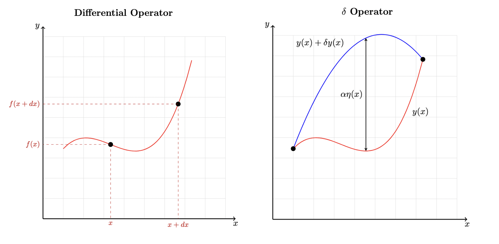
Degrees of Freedom
Consider a point in space, as shown below:
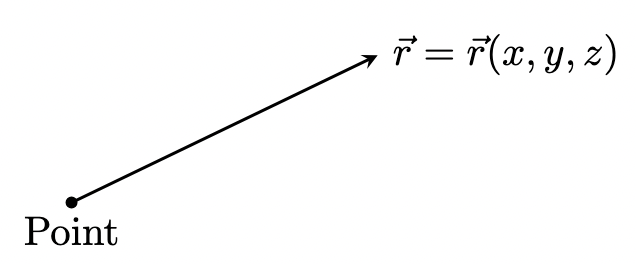
There are 3 numbers that describe the points position in space (namely, the $x,\;y,$ and $z$ coordinates). Since the particle above can move in 3 dimensions, along any path in the $x-$direction, $y-$direction, and $z-$direction, the particles has three degrees of freedom.
Assume that the particle is constrained to move only along the $xy-$plane. This means its $z-$coordinate is fixed ($z=0$), i.e the particle can only move in the $x-$direction, and the $y-$direction. Thus, the particle now has two degrees of freedom.
In other words, we took the number of coordinates that describes the position of the particle (3 coordinates) and subtracted the number of constraints the particle has in its motion (one constraint along the $z-$axis). This defined its degrees of freedom.
Let us generalize for a system of $N$ particles. Since each particle can move in three dimensions, there must be $3N$ quantities to specify the positions of all $N$ particles.
If there exists equations of constraint that relate some of these coordinates to others (for instance, if some of the particles were connected to form rigid bodies or as previously mentioned, the motion were constrained to lie along some path or surface), then not all the $3n$ coordinates are independent.
If there are $M$ equations of constraint, then $3N-M$ coordinates are independent, and the system is said to have:
$$\boxed{\ell = 3N-M\;\textbf{degrees of freedom}}$$Here, $\ell$ is the number of independent coordinates required to position the system. Let's take a look at some examples:
Identify the degrees of freedom in each of the following systems:
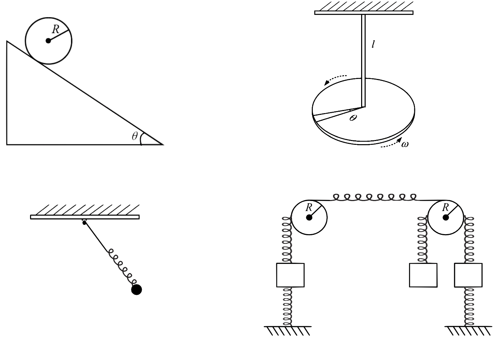
- For the top left, we have a sphere of radius $R$ rolling (without slipping) down an incline plane. So the ball is spinning while also moving transitionally down the incline. However, since the ball is rolling without slipping, the equations for each motion are coupled by $y=R\theta$ so there is only 1 degree of freedom.
- For top right, we have a torsional pendulum. Here is straightforward, since the pendulum only moves in the $\theta$ direction, so only 1 degree of freedom.
- For the bottom left, here the pendulum moves both in the $\theta$ direction as it oscillates, but the mass can also move up and down from the spring, so we have 2 degrees of freedom.
- For the bottom right, we have three masses that can only move up and down, so the oscillations of the masses contribute to three degrees of freedom. However, each of the pulleys of radius $R$ move without slipping so they each rotate along the $\theta$ direction, so each pulley contributes 1 degree of freedom each. This gives a total of 5 degrees of freedom.
Generalized Coordinates
We give the name generalized coordinates to any set of quantities that completely specifies the state of a system. The generalized coordinates are customarily written as:
$$\{q_1,q_2,\dots,q_{\ell}\}$$The above is a set of independent generalized coordinates of the system. Their first time derivatives:
$$\{\dot{q_1},\dot{q_2},\dots,\dot{q}_{\ell}\}\;\;\;\dot{q}\equiv\frac{dq}{dt}$$Give their generalized velocities.
Using our above generalized coordinates, define kinetic energy, $T$ (not $K$) as:
$$\boxed{T=T(\dot{q}_i)=\frac m2\sum_{\alpha}\dot{x}^2_{\alpha}(q_i)}$$And potential energy $V$ as:
$$\boxed{V=V(q_1,\dots,q_{\ell})}$$We define the mathematical function describing the difference in energies: $T-V$ as the Lagrangian of the mechanical system:
$$\boxed{\mathcal{L}=\mathcal{L}(q,\dot{q},t)\equiv T-V}$$Finally, we can the generalized (canonical) momentum as:
$$\boxed{p_i\equiv\frac{\partial\mathcal{L}}{\partial \dot{q}_i}}$$Using the above definitions, find the generalized coordinates and generalized velocities of the regular Cartesian geometry, $(x,y,z)$. Also include the Lagrangian and the expression for canonical momentum, assuming that $V=0$.
We let:
$$\begin{cases} q_1=x\\ q_2=y \\ q_3=z \end{cases}$$Finding the generalized velocities by taking the first derivative with respect to time:
$$\begin{cases} \dot{q}_1=\dot{x} \\ \dot{q}_1=\dot{y} \\ \dot{q}_3=\dot{z} \end{cases}$$With kinetic energy:
$$T=\frac m2\sum_{\alpha}\dot{x}^2_{\alpha}(q_i)=\frac 12 m(\dot{x}^2+\dot{y}^2+\dot{z}^2)=\mathcal{L}$$Since $\mathcal{L}=T-V=T$. Then for momentum:
$$p_i=\frac{\partial\mathcal{L}}{\partial \dot{q}_i}$$ $$\begin{cases} p_x=m\dot{x} \\ p_y=m\dot{y} \\ p_z=m\dot{z} \end{cases}$$Write down the generalized coordinates and generalized velocities for cylindrical geometry. If $V=0$, write down the Lagrangian and the generalized momentum for cylindrical coordinates
In cylindrical coordinates, we let:
$$\begin{cases} q_1= \rho\text{sin}\theta \\q_2 = \rho\text{cos}\theta \\ q_3 = z \end{cases}$$For generalized velocities:
$$\begin{cases} \dot{q}_1 = \rho\text{cos}\theta\dot{\theta}+\dot{\rho}\text{sin}\theta \\ \dot{q}_2=\dot{\rho}\text{cos}\theta-\rho\text{sin}\theta\dot{\theta} \\ \dot{q}_3=\dot{z} \end{cases}$$Then:
\begin{align*} T & = \frac m2\left[(\rho\text{cos}\theta\dot{\theta}+\dot{\rho}\text{sin}\theta)^2+(\dot{\rho}\text{cos}\theta-\rho\text{sin}\theta\dot{\theta})^2+\dot{z}^2\right] \\ & = \frac m2\bigg[\rho^2\text{cos}^2\theta\dot{\theta}^2+\cancel{\rho\dot{\rho}\text{cos}\theta\text{sin}\theta\dot{\theta}}+\cancel{\dot{\rho}\rho\text{sin}\theta\text{cos}\theta\dot{\theta}}+\dot{\rho}^2\text{sin}^2\theta \\ & +\dot{\rho}^2\text{cos}^2\theta-\cancel{\dot{\rho}\rho\text{cos}\theta\text{sin}\theta\dot{\theta}}-\cancel{\rho\dot{\rho}\text{sin}\theta\text{cos}\theta}+\rho^2\text{sin}^2\theta\dot{\theta}+\dot{z}^2\bigg] \\ T & = \frac m2(\rho^2\dot{\theta}^2+\dot{\rho}^2+\dot{z}^2) \end{align*}Since $\mathcal{L}=T-V=T$. Then, for momentum:
$$p_i=\frac{\partial\mathcal{L}}{\partial \dot{q}_i}$$ $$\begin{cases} p_\rho=m\dot{\rho} \\ p_{\theta}=m\rho^2\dot{\theta} \\ p_z=m\dot{z} \end{cases}$$Recognize that $p_{\theta}$ is simply angular momentum.
Hamilton's Principle
This is where we begin to make connections from variational calculus, to Lagrangian mechanics. First, let's define the action of a mechanical system to be:
$$\mathcal{S}\equiv \int_{t_1}^{t_2}(T-V)dt$$We know in regular Cartesian coordinates, the kinetic energy is $T=T(\dot{q}_i)$, (for instance, think $T=\frac 12 m\dot{q}^2$), and $V=V(x_i)$. And by definition of the Lagrangian last time:
$$\mathcal{L}\equiv T-V=\mathcal{L}(q_i,\dot{q}_i)$$Therefore, our action becomes:
$$\boxed{\mathcal{S}=\int_{t_1}^{t_2}\mathcal{L}(q,\dot{q},t)dt}$$Hamilton's Principle reads as follows:
$$\textit{Of all possible paths along which a mechanical system may move from one point}$$ $$\textit{to another within a given time interval},\textit{ the } \textbf{actual}\textit{ path followed is one that}$$ $$\textit{minimizes the }\textbf{action}\textit{, i.e}$$ $$\boxed{\delta \mathcal{S}=0}$$Note that the action looks awfully familiar to the functional $F(y,y',x)$ that we have been working with. We already know that the Euler-Lagrange equation must be satisfied for our functional, $F$, which means that our action $\mathcal{S}$ must satisfy Lagrange's Equation:
$$\boxed{\frac{\partial\mathcal{L}}{\partial q_i}-\frac{d}{dt}\left(\frac{\partial\mathcal{L}}{\partial\dot{q}_i}\right)=0}$$Derive Lagrange's Equations starting from Hamilton's Principle of least action. Use delta notation.
$$\frac{\partial\mathcal{L}}{\partial q}-\frac{d}{dt}\left(\frac{\partial\mathcal{L}}{\partial\dot{q}}\right)=0$$Let us introduce the function:
$$\bar{q}(x)=q(t)+\delta q(t)$$Which obeys the boundary conditions:
$$\delta \bar{q}(t_1)=\delta \bar{q}(t_2)=0$$Here, $\bar{q}(x)$ represents some varied path between the two endpoints at times $t_1$ and $t_2$. $q(t)$ represents the optimized path, and $\delta q(t)$ is some varied path from the two endpoints. Our goal is to extremize the action:
$$\mathcal{S}=\int_{t_1}^{t_2}\mathcal{L}(\bar{q},\bar{\dot{q}},t)dt$$By setting:
$$\delta \mathcal{S}=0$$ $$\delta \int_{t_1}^{t_2}\mathcal{L}(\bar{q},\bar{\dot{q}},t)dt=0$$ $$\delta \int_{t_1}^{t_2}\left[\frac{\partial\mathcal{L}}{\partial \bar{q}}\cdot\frac{\partial \bar{q}}{\partial\delta}+\frac{\partial\mathcal{L}}{\partial \bar{\dot{q}}}\cdot\frac{\partial \bar{\dot{q}}}{\partial \delta}\right]dt=0$$Note the following:
$$\bar{q}(x)=q(t)+\delta q(t)$$ $$\bar{\dot{q}}(t)=\dot{q}(t)+\delta\dot{q}(t)$$So:
$$\frac{\partial \bar{q}}{\partial \delta}=q(t)\;\;\;\text{and }\;\;\frac{\partial \bar{\dot{q}}}{\partial \delta}=\dot{q}$$So we have:
$$\int_{t_1}^{t_2}\left[\left(\frac{\partial\mathcal{L}}{\partial \bar{q}}\right)\delta \bar{q}+\left(\frac{\partial\mathcal{L}}{\partial\bar{\dot{q}}}\right)\delta\bar{\dot{q}}\right]dt$$Focusing on the second term, we can use integration by parts:
$$\int udv=uv-\int vdu$$Using the following substitutions:
\begin{align*} u&=\frac{\partial\mathcal{L}}{\partial \bar{\dot{q}}} & &dv=\delta\bar{\dot{q}} dt \\ du&=\frac{d}{dt}\left(\frac{\partial\mathcal{L}}{\partial\bar{\dot{q}}}\right) & &v=\delta \bar{q} \end{align*}Which gives:
$$\underbrace{\frac{\partial\mathcal{L}}{\partial\bar{\dot{q}}}\delta \bar{q}\bigg|_{t_1}^{t_2}}_{=0}-\int_{t_1}^{t_2}\frac{d}{dt}\left(\frac{\partial\mathcal{L}}{\partial\bar{\dot{q}}}\right)\delta \bar{q}dt$$The first term goes to zero becomes we assumed that $\delta\bar{q}(t_1)=\delta\bar{q}(t_2)=0$ from boundary conditions. Plugging this back into our original integral and evaluating at $\delta=0$ to rid of the bars, we get:
$$\delta \mathcal{S}=\int_{t_1}^{t_2}\left[\left(\frac{\partial\mathcal{L}}{\partial q}\right)-\frac{d}{dt}\left(\frac{\partial\mathcal{L}}{\partial \dot{q}}\right)\right]\delta qdt=0$$Since we assume $\delta q$ is some nonzero variation, we conclude that:
$$\boxed{\left(\frac{\partial\mathcal{L}}{\partial q}\right)-\frac{d}{dt}\left(\frac{\partial\mathcal{L}}{\partial \dot{q}}\right)=0}$$ $$\square$$How Can We Use Lagrange's Equation?
The following is the general steps we can take to solve an mechanical system using Lagrangian mechanics:
- Choose generalized coordinates (not necessarily unique) that aim to describe the degrees of freedom.
- Express the kinetic energy into these generalized coordinates. It is generally easier to start in Cartesian, $(x,y,z)$, then transform into generalized coordinates $q$. Recall kinetic energy is: $$T=\frac m2 \sum_i \dot{q}_i^2$$
- Find potential energy, $V$, and write the Lagrangian $\mathcal{L}=T-V$.
- Obtain equations of motion by solving Lagrange's Equation: $$\frac{\partial\mathcal{L}}{\partial q_i}-\frac{d}{dt}\left(\frac{\partial\mathcal{L}}{\partial \dot{q}_i}\right)$$
- Solve the differential equation you obtain from Lagrange's Equation to get $q_i(t)$.
Note: For many systems, the differential equation you need to solve in step 5. may be extremely hard, or in some cases not solvable analytically. In these cases, it is fine to leave the differential equation as is.
For the simple pendulum system below, go through the steps above to find the Lagrangian and the resulting equations of motion for the system.
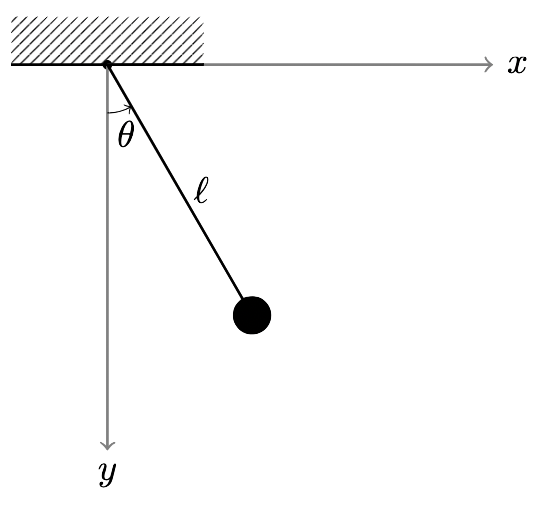
We have one degree of freedom, which means our $x$ and $y$ position can be found in terms of the parameter $\theta$. Using the Cartesian axis in the figure, we find our generalized coordinates is:
$$\vec{r}=\vec{r}(x,y)=(\ell\text{sin}\theta,-\ell\text{cos}\theta)$$Step 1. completed. Now, we want to find kinetic energy, and to do this, we first need generalized velocities, which are given by:
$$\vec{v}=\dot{\vec{r}}=(\ell\text{cos}\theta\dot{\theta},\ell\text{sin}\theta\dot{\theta})$$So kinetic energy is:
$$T=\frac m2 (v_1^2+v_2^2)=\frac m2(\ell^2\text{cos}^2\theta\dot{\theta}^2+\ell^2\text{sin}^2\theta\dot{\theta}^2)$$ $$T=\frac{m\ell 2\dot{\theta}^2}{2}$$Step 2. completed. Now we find the potential energy by noticing the pendulum's position with respect to the origin:
$$V=-mg\ell\text{cos}\theta$$So the Lagrangian, $\mathcal{L}=T-V$ is:
$$\mathcal{L}=\frac{m\ell^2\dot{\theta}^2}{2}+mg\ell\text{cos}\theta$$Step 3. completed. We now apply Lagrange's Equation:
$$\frac{\partial\mathcal{L}}{\partial \theta}-\frac{d}{dt}\left(\frac{\partial\mathcal{L}}{\partial \dot{\theta}}\right)$$We note that:
$$\frac{\partial\mathcal{L}}{\partial\theta}=-mg\ell\text{sin}\theta\;\;\;\text{and }\;\;\frac{\partial\mathcal{L}}{\partial\dot{\dot{\theta}}}=m\ell^2\dot{\theta}\;\;\;\text{and }\;\;\frac{d}{dt}\left(\frac{\partial\mathcal{L}}{\partial\dot{\theta}}\right)=m\ell^2\ddot{\theta}$$So we have:
$$m\ell^2\ddot{\theta}+mg\ell\text{sin}\theta=0$$ $$\boxed{\ddot{\theta}+\frac{g}{\ell}\text{sin}\theta=0}$$Note for small $\theta$, $\text{sin}\theta\approx\theta$, which gives:
$$\boxed{\theta(t)=A\text{cos}(\omega t)+B\text{sin}(\omega t)}$$Where:
$$\omega^2=\frac{g}{\ell}$$Consider a Atwood Pulley Machine that has two masses, $m_1$ and $m_2$, connected by a string of length $\ell$. Assume the pulley has neglible mass and radius. Find the equations of motion for the system.
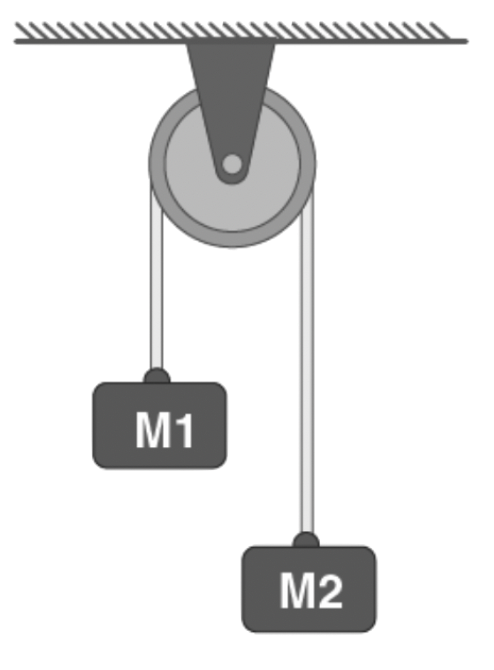
First, we find our generalized coordinates. Here, $m_1$ is a distance $y_1=y$ below the pulley. This means that $m_2$ is a distance $y_2=\ell-y$ below the pulley. Hence, there is only one degree of freedom. Thus, our kinetic energy is:
$$T=\frac 12 m_1\dot{y}_1^2+\frac 12 m_2\dot{y}_2^2$$ $$T=\frac 12 m\dot{y}^2+\frac 12 m_2(-\dot{y})^2$$ $$T=\frac 12 (m_1+m_2)\dot{y}^2$$Then, our potential energy is:
$$V=-m_1gy_1-m_2gy_2$$ $$V=-m_1gy-m_2g(\ell-y)$$ $$V=(m_2-m_1)gy-m_2g\ell$$So our Lagrangian is $\mathcal{L}=T-V$ or:
$$\mathcal{L}=\frac 12 (m_1+m_2)\dot{y}^2-(m_2-m_1)gy+m_2g\ell$$Applying the Euler-Lagrange Equation:
$$\frac{\partial \mathcal{L}}{\partial y}-\frac{d}{dt}\left(\frac{\partial\mathcal{L}}{\partial\dot{y}}\right)=0$$ $$-(m_2-m_2)g-(m_1+m_2)\ddot{y}=0$$ $$\boxed{\ddot{y}=\frac{m_1-m_2}{m_1+m_2}g}$$Consider a bead of mass $m$ that can freely slide without friction on a wire bent into the shape of a parabola described by $z=c\rho^2$, where $c$ is a positive constant. The parabolic wire is rotated at angular velocity $\omega$, and as a result, the bead moves up the wire. Find the equations of motion of the bead sliding up the wire.
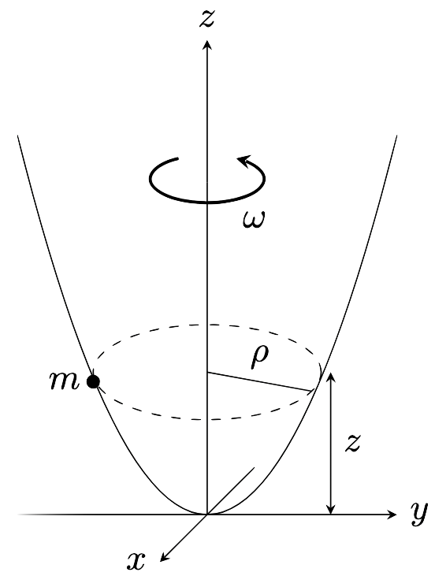
We can see that the bead moves in a circular path of radius $\rho$, which is time-dependent, since the magnitude of $\rho$ will change in time as the mead slides up the wire. The angular displacement of the bead $\theta$ can be expressed as $\theta=\omega t$. Thus, we have one degree of freedom:
$$\begin{cases} x=\rho\text{cos}(\omega t) \\ y = \rho\text{sin}(\omega t) \\ z=c\rho^2 \end{cases}\Longrightarrow\begin{cases} \dot{x}=\dot{\rho}\text{cos}(\omega t)-\omega \rho\text{sin}(\omega t) \\ \dot{y}=\dot{\rho}\text{sin}(\omega t)+\omega\rho\text{cos}(\omega t) \\ \dot{z}=2c\rho\dot{\rho} \end{cases}$$Finding kinetic energy:
$$T=\frac 12 m(\dot{x}^2+\dot{y}^2+\dot{z}^2)$$ $$T=\frac 12 m(\dot{\rho}^2+\omega^2\rho^2+4c^2\rho^2\dot{\rho}^2)$$With potential energy:
$$V=mgz=mgc\rho^2$$So our Lagrangian is $\mathcal{L}=T-V$ is:
$$\mathcal{L}=\frac 12 m\left(\dot{\rho}^2+\omega^2\rho^2+4c^2\rho^2\dot{\rho}^2-2gc\rho^2\right)$$Applying the Euler-Lagrange Equation:
$$\frac{\partial \mathcal{L}}{\partial \rho}-\frac{d}{dt}\left(\frac{\partial\mathcal{L}}{\partial\dot{\rho}}\right)=0$$Taking the first term:
$$\frac{\partial\mathcal{L}}{\partial \rho}=m\omega^2\rho+4mc^2\rho\dot{\rho}^2-2mgc\rho$$Taking the second term:
$$\frac{d}{dt}\left(\frac{\partial\mathcal{L}}{\partial\dot{\rho}}\right)=\frac{d}{dt}(m\dot{\rho}+4mc^2\rho^2\dot{\rho})=m\ddot{\rho}+4mc^2\rho^2\ddot{\rho}+8mc^2\dot{\rho}^2\rho$$So we have:
$$m\omega^2\rho+4mc^2\rho\dot{\rho}^2-2mgc\rho-m\ddot{\rho}-4mc^2\rho^2\ddot{\rho}-8mc^2\dot{\rho}^2\rho=0$$ $$\boxed{\ddot{\rho}+4c^2\rho^2\ddot{\rho}+4c^2\dot{\rho}^2\rho-\omega^2\rho+2gc\rho=0}$$If $\rho=$constant at some steady state, then $\dot{\rho}=0$ and $\ddot{\rho}=0$, so we have:
$$-\omega^2\rho+2gc\rho=0$$ $$\boxed{\omega^2=2gc}$$What if $c\rightarrow 0$, i.e the parabolic wire got increasingly flat? Then we would have:
$$\ddot{\rho}-\omega^2\rho=0$$This is a differential equation we could actually solve, and it turns out it has solution:
$$\boxed{\rho(t)=A\text{sinh}(\omega t)+B\text{cosh}(\omega t)}$$Consider a movable inclined plane of mass $M$ an inclination $\theta$ and with a system of pulleys resting on a frictionless surface. The mass $m$ is connected by a wire that runs over the pulley system as shown. When the mass $m$ moves, the inclined plane is drawn towards the wall. Determine the acceleration with which the inclined plane will move.
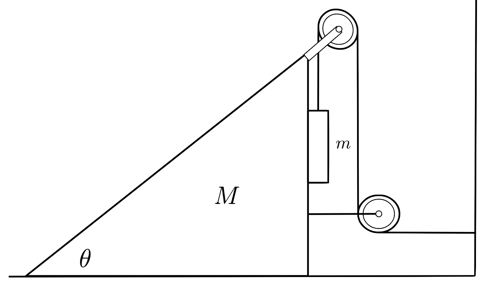
Let $x_1$ be the position of inclined plane, and $x_2$ be the position of the mass $m$. Note that as the inclined plane moves by distance $d$, the mass moves both in the $x$ and $y$ directions, as such, we can say that the velocity of the inclined plane is $\dot{x}_1$ and the velocity of the inclined plane is $\dot{x}_2=\sqrt{2}\dot{x}_1$. So:
$$T=\frac 12 m_1\dot{x}_1^2+\frac 12 m_2\dot{x}_2^2$$ $$T=\frac 12 m_1\dot{x}_1^2+m_2\dot{x}_1^2$$For the potential energy, take the zero points of potential energy to be the initial starting point of block $m$, so we have:
$$V=-m_2gx_1$$The Lagrangian is:
$$\mathcal{L}=T-V=\frac 12 m_1\dot{x}_1^2+m_2\dot{x}_1^2+m_2gx_1$$So the Lagrange equation is:
$$\frac{\partial\mathcal{L}}{\partial x}-\frac{d}{dt}\left(\frac{\partial\mathcal{L}}{\partial \dot{x}_1}\right)=0$$ $$m_2g-\frac{d}{dt}\left(m_1\dot{x}_1+2m_2\dot{x}_1\right)$$ $$m_2g-\ddot{x}_1(m_1+2m_2)=0$$ $$\boxed{\ddot{x}_1=a_1=\frac{m_2g}{m_1+2m_2}}$$Virtual Work
Virtual Displacement: Change in the configuration resulting from an arbitrary change in coordinates, denoted as $\delta\vec{r}_j$ for particle $j$ at instantaneous time $t$. The displacements are called ``virtual" because they are purely imaginary. The requirements on acceptable virtual displacements are:
- The time is held fixed
- There is no change in time derivatives
- There are as many possible virtual displacements as there are variables needed to describe the motion.
- The displacements obey the constraints on the motion.
Note the difference between real displacement $d\vec{r}_j$ during a time interval $dt$.
Define the total force acting on particle $j$ in box $m$ as:
$$\vec{F}_j=\vec{F}_j^{\text{app}}+\vec{F}_j^{\text{cons}}$$Where $\vec{F}_j^{\text{app}}$ is the applied force, and $F_j^{\text{cons}}$ is the constrained force, that is a holonomic force that is always perpendicular to the surface on which the particle is moving. Note the box and particles are in static equilibrium. The virtual displacement, $\delta\vec{r}_j$ is drawn as shown, perpendicular to $F_j^{\text{cons}}$. Derive an expression for the virtual work, $\delta W$.
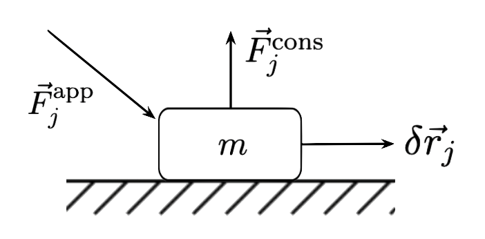
The particle $j$ is in static equilibrium, so we have:
$$\vec{F}_j=\vec{F}_j^{\text{app}}+\vec{F}_j^{\text{cons}}=0$$This is true for any $j$ particles, hence:
$$\sum_{j=1}^N\vec{F}_j=\vec{0}$$We can multiply by $\delta\vec{r}_j$ on both sides to get:
$$\sum_{j=1}^N\vec{F}_j\cdot\delta\vec{r}_j=\vec{0}$$ $$\sum_{j=1}^N\vec{F}_j^{\text{app}}\cdot\delta\vec{r}_j+\sum_{j=1}^N\vec{F}_j^{\text{cons}}\cdot\delta\vec{r}_j=\vec{0}$$And since $\vec{F}_j^{\text{cons}}$ is orthogonal to $\delta\vec{r}_j$, the dot product is zero, and so the second term is zero. We're left with:
$$\sum_{j=1}^N\vec{F}_j^{\text{app}}\cdot\delta\vec{r}_j=\vec{0}$$And this looks very similar to our expression for work, but now we have a virtual displacement that corresponds to virtual work. Therefore, for a holonomic system in equilibrium if:
$$\delta W=0$$Therefore:
$$\boxed{\delta W=\sum_{j=1}^N\vec{F}_j^{\text{app}}\cdot\delta\vec{r}_j=\vec{0}}$$This leads us to the $\boldsymbol{1}^{\textbf{st}}$ D'Alembert Principle that states: "For all virtual displacements $\delta\vec{r}_j$, a system is at equilibrium if the work done by the applied forces is zero."
And we can also note that:
$$\vec{F}_j=\vec{F}_j^{\text{app}}+\vec{F}_j^{\text{cons}}=\dot{\vec{p}}_j$$And so the dynamical principle of all virtual work, or sometimes called holonomic D'Alembert's Principle is:
$$\boxed{\sum_{j=1}^N\left(\vec{F}_j^{\text{app}}-\dot{\vec{p}}_j\right)\cdot\delta\vec{r}_j=\vec{0}}$$Lagrange Equations From Virtual Work
Recall that for $N$ particles, we have $\ell=3N-m$ generalized coordinates. Thus, we define the following notation:
$$\vec{r}_j=\vec{r}_j(q_1, q_2,\dots,q_{\ell}, t)$$ $$d\vec{r}_j=\sum_{k=1}^{\ell}\frac{\partial\vec{r}_j}{\partial q_k}dq_k+\frac{\partial \vec{r}_j}{\partial t}dt$$ $$\dot{\vec{r}}_j=\sum_{k=1}^{\ell}\frac{\partial\vec{r}_j}{\partial q_k}\dot{q_k}+\frac{\partial \vec{r}_j}{\partial t}$$And virtual displacement as:
$$\delta\vec{r}_j=\sum_{k=1}^{\ell}\frac{\partial\vec{r}}{\partial q_k}\delta q_k$$Starting from D'Alembert's 1$^{\text{st}}$ Principle:
$$\sum_{j=1}^N\left(\vec{F}_j^{\text{app}}-\dot{\vec{p}}_j\right)\cdot\delta\vec{r}_j=\vec{0}$$derive Lagrange's Equation. What is different about this form of Lagrange's Equation?
Let's break this up into two terms:
$$\sum_{j=1}^N\bigg(\underbrace{\vec{F}_j^{\text{app}}}_{\text{Term 1}}-\underbrace{\dot{\vec{p}}_j}_{\text{Term 2}}\bigg)\cdot\delta\vec{r}_j=\vec{0}$$Term 1:
$$\sum_{j}\vec{F}_j^{\text{app}}\cdot\delta\vec{r}_j$$ $$\sum_{j,k}\vec{F}_j^{\text{app}}\cdot\frac{\partial\vec{r}_j}{\partial q_k}\delta q_k\equiv \sum_k Q_k^{\text{app}}\delta q_k$$Where:
$$Q_k^{\text{app}}\equiv\sum_j\vec{F}_j\cdot \frac{\partial\vec{r}_j}{\partial q_k}$$Here, $Q_k^{\text{app}}$ represent the generalized applied forces.
Term 2:
\begin{align*} \sum_j\dot{p}_j\cdot\delta\vec{r}_j & = \sum_j m\ddot{\vec{r}}_j\cdot\delta\vec{r}_j \\ & = \sum_{j,k}m\ddot{\vec{r}}_j\cdot\frac{\partial \vec{r}_j}{\partial q_k}\delta q_k \\ & = \sum_k\left[\sum_j\left(\frac{d}{dt}\left(m\dot{\vec{r}}_j\cdot\frac{\partial\vec{r}_j}{\partial q_k}\right)-m\dot{\vec{r}}_j\frac{d}{dt}\left(\frac{\partial \vec{r}_j}{\partial q_k}\right)\right)\right]\delta q_k \\ & = \sum_k\left[\sum_j\left(\frac{d}{dt}\left(m\dot{\vec{r}}_j\cdot\frac{\partial\vec{r}_j}{\partial q_k}\cdot\frac{\frac{d}{dt}}{\frac{d}{dt}}\right)-m\dot{\vec{r}}_j\frac{d}{dt}\left(\frac{\partial \vec{r}_j}{\partial q_k}\right)\right)\right]\delta q_k \\ & = \sum_k\left[\sum_j\left(\frac{d}{dt}\left(m\dot{\vec{r}}_j\cdot\frac{\partial\dot{\vec{r}}_j}{\partial \dot{q}_k}\right)-m\dot{\vec{r}}_j\frac{d}{dt}\left(\frac{\partial \vec{r}_j}{\partial q_k}\right)\right)\right]\delta q_k \\ & =\sum_k\left[\sum_j\left(\frac{d}{dt}\left(m\dot{\vec{r}}_j\cdot\frac{\partial\dot{\vec{r}}_j}{\partial \dot{q}_k}\right)-m\dot{\vec{r}}_j\left(\frac{\partial \dot{\vec{r}}_j}{\partial q_k}\right)\right)\right]\delta q_k \\ & = \sum_k\left[\sum_j\left(\frac{d}{dt}\cdot\frac{\partial}{\partial\dot{q}_k}\left(\frac{m\dot{\vec{r}}_j^2}{2}\right)-\frac{\partial}{\partial q_k}\left(\frac{m\dot{\vec{r}}_j^2}{2}\right)\right)\right]\delta q_k \\ & = \sum_{k=1}^{\ell}\left(\frac{d}{dt}\frac{\partial T}{\partial \dot{q}_k}-\frac{\partial T}{\partial q_k}\right)\delta q_k \end{align*}Putting Term 1 and Term 2 together:
$$\sum_{j=1}^N\left(\vec{F}_j^{\text{app}}-\dot{\vec{p}}_j\right)\cdot\delta\vec{r}_j$$ $$\sum_{k=1}^{\ell}\left(Q_k^{\text{app}}-\frac{d}{dt}\frac{\partial T}{\partial \dot{q}_k}+\frac{\partial T}{\partial q_k}\right)\delta q_k=\vec{0}$$So finally:
$$\boxed{\frac{d}{dt}\left(\frac{\partial T}{\partial \dot{q}_k}\right)-\frac{\partial T}{\partial q_k}=Q_k^{\text{app}}}$$This holds for all $k=1,2,\dots,\ell$.
Using the above result in the case of a conservative force, i.e a force in which:
$$\vec{F}_j^{\text{app}}=-\nabla V\left(\vec{r}_1,\dots,\vec{r}_N\right)$$Does the result look familiar?
Our generalized applied forces term becomes:
\begin{align*} Q_k^{\text{app}} & =\sum_j\vec{F}_j^{\text{app}}\cdot\frac{\partial\vec{r}_j}{\partial q_k} \\ & = -\nabla V\left(\vec{r}_1,\dots,\vec{r}_N\right)\cdot\frac{\partial\vec{r}_j}{\partial q_k} \\ & = -\frac{\partial}{\partial \vec{r}_j} \left(\vec{r}_1,\dots,\vec{r}_N\right)\cdot\frac{\partial\vec{r}_j}{\partial q_k} \\ & = -\frac{\partial V}{\partial q_k} \end{align*}So from our result in the last problem:
$$\frac{d}{dt}\left(\frac{\partial T}{\partial \dot{q}_k}\right)-\frac{\partial T}{\partial q_k}=-\frac{\partial V}{\partial q_k}$$ $$\frac{d}{dt}\left(\frac{\partial T}{\partial \dot{q}_k}\right)-\frac{\partial T}{\partial q_k}+\frac{\partial V}{\partial q_k}$$ $$\frac{d}{dt}\left(\frac{\partial T}{\partial \dot{q}_k}\right)-\frac{\partial}{\partial q_k}(T-V)=0$$If we let $\mathcal{L}\equiv T-V$, then we have:
$$\boxed{\frac{d}{dt}\left(\frac{\partial \mathcal{L}}{\partial \dot{q}_k}\right)-\frac{\partial \mathcal{L}}{\partial q_k}=0}$$Note that potential energy $V$ is independent of the generalized velocities $\dot{q}_k$, so:
$$\frac{\partial \mathcal{L}}{\partial \dot{q}_k}=\frac{\partial}{\partial\dot{q}_k}(T-V)=\frac{\partial T}{\partial \dot{q}_k}$$Of course, the result of this expression is our usual Lagrange Equation. So it's clear that the above result is only valid for conservative forces (ex. gravity, spring force).
Forces of Constraint
Recall that from the power of D'Alembert's principle of virtual work is that it directly separates the applied forces and the forces of constraints. We saw the equations of motion are given by:
\begin{align*} \frac{d}{dt}\left(\frac{\partial T}{\partial \dot{q}_k}\right)-\frac{\partial T}{\partial q_k}=Q_{k}^{\text{app}} \\ Q_k^{\text{app}}=\sum_j \vec{F}_j^{\text{app}}\cdot\frac{\partial\vec{r}_j}{\partial q_k} \end{align*}The above gives the applied forces, but what about the forces of constraints? If we assume a holonomic constraint of the form:
$$f_p(\vec{r}_1,\vec{r}_2,\dots,\vec{r}_N;t)=f_p(x_1,x_2,\dots,x_{3N};t)=0$$Where $p=1,2,\dots,m$, and we have expressed the radius vector $\vec{r}$ by its Cartesian coordinates $x_i$ i.e associated with the $N$ radius vector, we now have the $3N$ Cartesian coordinates.
Let's decompose the holonomic equation of constraints by its Cartesian coordinates $x_i$:
$$\delta f_p=\sum_{i=1}^{3N}\left(\frac{\partial f_p}{\partial x_i}\right)\delta x_i=0$$Of course, the differential $\delta f_p$ is still zero by definition of the equation for the holonomic constraint. Since it is zero, we can multiply both sides by an undetermined Lagrange multiplier $\lambda$:
$$\lambda\sum_{i=1}^{3N}\left(\frac{\partial f_p}{\partial x_i}\right)\delta x_i=0$$Summing over all $\lambda_p$, we have:
$$\sum_{p=1}^m\lambda_p\sum_{i=1}^{3N}\left(\frac{\partial f_p}{\partial x_i}\right)\delta x_i=0$$and the sum is over the $m$ equation of constraints labeled by the index $p$. D’Alembert’s principle states:
$$\sum_{i=1}^{3N}\left(F_i^{\text{app}}-\dot{p}_i\right)\cdot\delta x_i=0$$Adding 'zero', we get:
$$\sum_{i=1}^{3N}\left(F_i^{\text{app}}+0-\dot{p}_i\right)\cdot\delta x_i=0$$ $$\sum_{i=1}^{3N}\left[F_i^{\text{app}}+\sum_{p=1}^m\lambda_p\frac{\partial f_p}{\partial x_i}-\dot{p}_i\right]\cdot\delta x_i=0$$It is important to emphasize that owing the m constraints, we have only $3N-m$ independent virtual displacements and also $m$ unknown multiplier $\lambda_p$, for a total of $3N$ independent parameters to be determined. We have for all virtual displacements “$i$” that:
$$F_i^{\text{app}}+\sum_{p=1}^m\lambda_p\frac{\partial f_p}{\partial x_i}-\dot{p}_i=0\;\;\;i=1,2,\dots,3N$$And if we compare these to Newton's Equations where:
$$F_i^{\text{app}}+F_i^{\text{cons}}-\dot{p}_i=0$$Matching this with our equation above we see that:
$$\boxed{F_i^{\text{cons}}=\sum_{p=1}^m\lambda_p\frac{\partial f_p}{\partial x_i}}$$Find the forces of constraint for generalized coordinates $q_k$:
$$q_k=q_k(x_1,x_2,\dots,x_{3N};t)$$ with $k=1,2,\dots,3N$. Then, modify Lagrange's Equation to include the generalized forces of constraint. What is the case for conservative applied forces?We have:
$$\sum_{i=1}^{3N}\left[F_i^{\text{app}}+\sum_{p=1}^m\lambda_p\frac{\partial f_p}{\partial x_i}-\dot{p}_i\right]\cdot\frac{\partial x_i}{\partial q_k}=0$$By definition, we know that the generalized applied forces are:
$$Q_k^{\text{app}}=\sum_{i=1}^{3N} F_j^{\text{app}}\cdot\frac{\partial x_i}{\partial q_k}$$By matching the two equations above, we can see that:
$$Q_k^{\text{cons}}=\sum_{i=1}^{3N}\sum_{p=1}^m\lambda_p\frac{\partial f_p}{\cancel{\partial x_i}}\cdot\frac{\cancel{\partial x_i}}{\partial q_k}$$ $$\boxed{Q_k^{\text{cons}}=\sum_{p=1}^m\lambda_0\frac{\partial f_p}{\partial q_k}}$$The Lagrange equations derived from the principle of virtual work can be generalized by adding the forces of constraints (not formally shown here):
$$\boxed{\frac{d}{dt}\left(\frac{\partial T}{\partial \dot{q}_k}\right)-\frac{\partial T}{\partial q_k}=Q_k^{\text{app}}+Q_k^{\text{cons}}}$$For $k=1,2,\dots,3N$. Where $Q_k^{\text{cons}}$ are the generalized forces of constraint associated with the $m$ equations of constraint $f_p(q_1,q_2,\dots,q_{3N};t)=0$ with $p=1,2,\dots,m$. We therefore have $3N+m$ equations, to determine the $3N+m$ unknown, i.e the $3N$ generalized coordinates $q_k(t)$ and the $m$ Lagrange multipliers $\lambda_p$.
For conservative applied forces, i.e forces which can be derived from a potential $V$, the Lagrange equations can be written in the form:
$$\boxed{\frac{d}{dt}\frac{\partial\mathcal{L}}{\partial\dot{q}_k}-\frac{\partial\mathcal{L}}{\partial q_k}=Q_k^{\text{cons}}=\sum_{p=1}^m\lambda_p\frac{\partial f}{\partial q_k},\;\;\;\;k=1,2,\dots,3N}$$Consider a rolling disk of mass $m$ and radius $R$ rolling down on an incline making an angle $\alpha$ with the horizontal. Find the equations of motion and the forces of constraints on the rolling disk. Choose the coordinate $y$ the distance from the top of the incline to the center of the disk, and the angle $\theta$ with respect to an axis perpendicular to $y$ as the generalized coordinates.
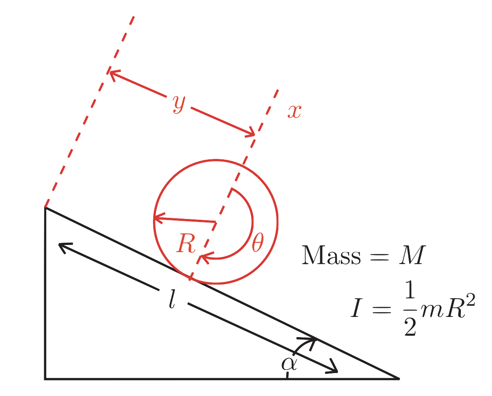
First, let's consider kinetic energy:
$$T=\frac 12 M\dot{y}^2+\frac 12 I\dot{\theta}^2$$ $$T=\frac 12 M\dot{y}^2+\frac 14 M R^2\dot{\theta}^2$$And potential energy is:
$$V=Mg(\ell-y)\text{sin}\alpha$$So our Lagrangian is:
$$\mathcal{L}=T-V=\frac 12 M\dot{y}^2+\frac 14 MR^2\dot{\theta}^2+Mg(y-\ell)\text{sin}\alpha$$The disk is constrained to roll without slipping, and so the equations of constraint for a rolling object must be
$$f(y,\theta)=y-R\theta=0$$So with $y=R\theta$, we can eliminate one variable! Hence, in this problem, we can either use one Lagrange equation to solve the equation of motion, or we may consider both $y$ and $\theta$ as generalized coordinates and introduce one Lagrange multiplier. This is the approach that we will choose so as to determine the forces of constraint on the rolling disk. Because there is a single function $f_p$, we need to include only a single Lagrange multiplier $\lambda$. The Lagrange equations for $y$ and $\theta$ become:
$$\frac{\partial\mathcal{L}}{\partial y}-\frac{d}{dt}\left(\frac{\partial\mathcal{L}}{\partial\dot{y}}\right)+\lambda\frac{\partial f}{\partial y}=0\;\;\;\;\;\text{and }\;\;\;\;\frac{\partial\mathcal{L}}{\partial \theta}-\frac{d}{dt}\left(\frac{\partial\mathcal{L}}{\partial\dot{\theta}}\right)+\lambda\frac{\partial f}{\partial \theta}=0$$Plugging in our Lagrangian into the first equation for the $y$ variable:
\begin{align} Mg\text{sin}\alpha-M\ddot{y}+\lambda=0 \label{eq:aa} \end{align}Plugging our Lagrangian into the second equation for the $\theta$ variable:
\begin{align} -\frac 12 MR^2\ddot{\theta}-\lambda R=0 \label{eq:bb} \end{align}And our equation of constraint:
\begin{align} y = R\theta \label{eq:cc} \end{align}Equations \ref{eq:aa}, \ref{eq:bb}, and \ref{eq:cc} form system of equations. If we differentiate Equation \ref{eq:cc} twice with respect to time, we get:
$$\ddot{y}=R\ddot{\theta}\Longleftrightarrow \ddot{\theta}=\frac{\ddot{y}}{R}$$Plugging this into Equation \ref{eq:bb}:
$$-\frac 12 MR\ddot{y}-\lambda R=0$$ $$\lambda=-\frac 12 M\ddot{y}$$Plugging this result into Equation \ref{eq:aa}:
$$Mg\text{sin}\alpha-M\ddot{y}-\frac 12 M\ddot{y}=0$$ $$\boxed{\ddot{y}=\frac{2g}{3}\text{sin}\alpha}$$Then we get:
$$\lambda=-\frac 12 M\ddot{y}=-\frac{Mg}{3}\text{sin}\alpha$$And know the force of constraint for the $y$ variable is:
$$Q_y^{\text{cons}}=\lambda\frac{\partial f}{\partial y}=\lambda=\boxed{-\frac{Mg}{3}\text{sin}\alpha}$$And the force of constraint for the $\theta$ variable is:
$$Q_{\theta}^{\text{app}}=\lambda\frac{\partial f}{\partial \theta}=-\lambda R=\boxed{\frac{MgR}{3}\text{sin}\alpha}$$These are the forces/torques that are required to keep the disk rolling without slipping.
Recall the bead on a rotating parabolic wire given by $z=c\rho^2$, a problem which we have seen before. Use the method of Lagrange multipliers to solve for both the centripetal force, and the normal force that the wire exerts on the bead.
Recall our Lagrangian is:
$$\mathcal{L}=T-V=\frac m2\left[\dot{\rho}^2+\rho^2\dot{\varphi}^2+\dot{z}^2\right]-mgz$$With constraint given by the equation of the parabola:
$$f=z-c\rho^2=0$$With Lagrange's Equation being:
$$\frac{d}{dt}\left(\frac{\partial\mathcal{L}}{\partial\dot{q}_i}\right)-\frac{\partial\mathcal{L}}{\partial q}+\lambda\frac{\partial f}{\partial q}=0$$Applying this equation to each variable: $\rho$, $\varphi$, and $z$, we get:
\begin{align} m\ddot{\rho}-m\rho\dot{\varphi}^2-2c\rho\lambda=0 \label{eq:aaa} \\ m\rho\ddot{\varphi}=0 \label{eq:bbb} \\ m\ddot{z}+mg+\lambda=0 \label{eq:ccc} \\ z=c\rho^2 \label{eq:ddd} \end{align}Suppose the bead is at a stable height, so $z=h$, which implies $\ddot{z}=0$. From Eq. \ref{eq:ccc}, we get:
$$mg+\lambda=0\Longleftrightarrow \lambda=-mg$$Also notice from Eq. \ref{eq:bbb} that $m\rho\ddot{\varphi}=0$, which implies that $\dot{\varphi}=\text{constant}$. To show this, we can say that since the bead is at a constant height, it spins at constant radius $\rho$ as well, so $\ddot{\rho}=0$. So from Eq. \ref{eq:aaa}, we get:
$$-m\rho\dot{\varphi}^2-2c\rho \lambda=0$$Plugging in $\lambda=-mg$:
$$-m\rho\dot{\varphi}^2+2c\rho mg=0$$ $$\dot{\varphi}=\sqrt{2cg}\equiv\omega_0$$Therefore, the centripetal force is:
$$\boxed{F_c=m\rho \omega_0^2=2m\rho cg}$$And for the normal force, consider the following free body diagram of the bead:
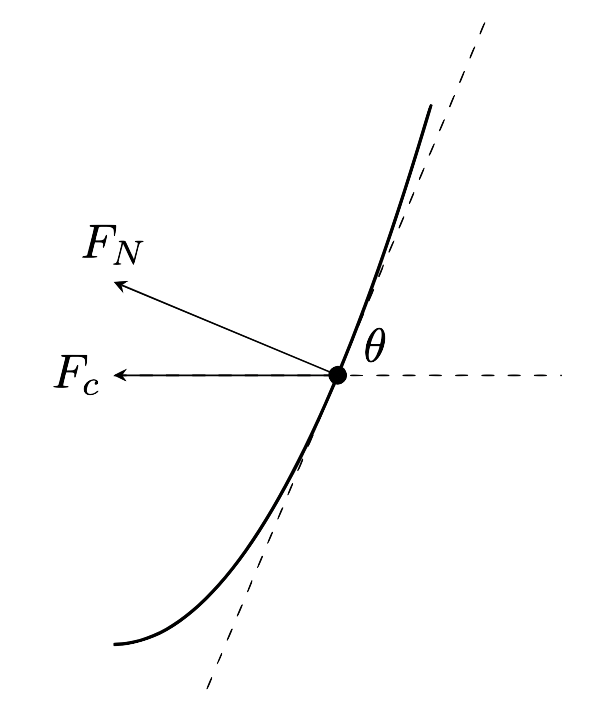
We can see that the dashed tangent line to the parabola has relation to angle $\theta$ by:
$$\text{tan}\theta=\frac{\partial z}{\partial \rho}=2c\rho$$And we know from geometry that:
$$F_N\text{sin}\theta=F_c$$ $$F_N\text{sin}\theta=2m\rho cg$$ $$F_N=\frac{2m\rho cg}{\text{sin}\theta}=\frac{2m\rho cg}{\frac{2c\rho}{\sqrt{4c^2\rho^2+1}}}=$$ $$\boxed{F_N=mg\sqrt{4c^2\rho^2+1}}$$Consider a thin loop of radius $a$, moment of inertia $ma^2$, and centre $O$ rolling without slipping on a semicircle of radius $R$ and centre $C$. Define the distance $CO$ to be the distance between each objects' centres, in other terms, $CO=r=R+a$. Determine the angle $\theta$ where the sphere leaves the semicircle.
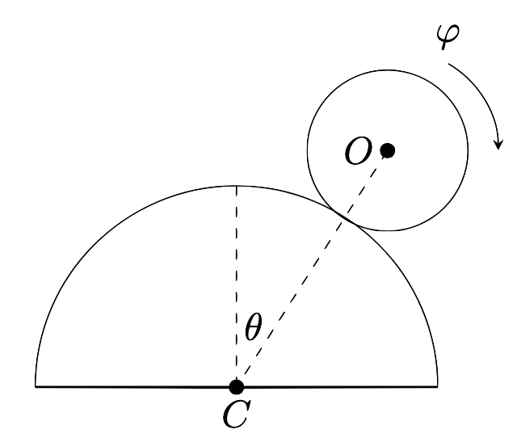
Writing the Lagrangian, we must note that the sphere has both translational kinetic energy, rotational energy with respect to $\theta$, and rotational energy with respect to $\varphi$, so we have:
$$\mathcal{L}=\frac 12 m \dot{r}^2+\frac 12 mr^2\dot{\theta}^2+\frac 12 ma^2\dot{\varphi}^2-mgr\text{cos}\theta$$This time, we have two constraints: one being the centre-to-centre distance between each object is contact up to the point where the cylinder leaves the semi-circle, and the other constraint being from that the cylinder is rotating without slipping. In other words, the angular displacement of the cylinder with respect to $C$ is $\theta r$ and is equal to the angular displacement of the cylinder with respect to $O$, i.e $\varphi a$, so:
$$f=r-R-a\;\;\;\;\;\;\text{and }\;\;\;\;\; g=\theta r-\varphi a$$With two constraints, we have Lagrange's Equation as:
$$\frac{d}{dt}\left(\frac{\partial\mathcal{L}}{\partial\dot{q}_i}\right)-\frac{\partial\mathcal{L}}{\partial q}+\lambda\frac{\partial f}{\partial q}+\mu \frac{\partial g}{\partial q}=0$$Applying this to each variable: $r$, $\theta$, and $\varphi$, we get:
\begin{align} m\ddot{r}-mr\dot{\theta}^2+mg\text{cos}\theta+\lambda=0 \label{eq:yek} \\ mr^2\ddot{\theta}-mgr\text{sin}\theta+\mu r=0 \label{eq:do} \\ ma^2\ddot{\varphi}-\mu a=0 \label{eq:se} \\ r-R-a=0 \label{eq:chahar} \\ \theta r-\varphi a=0 \label{eq:panj} \end{align}From Eq. \ref{eq:se}, we have that $\mu=ma\ddot{\varphi}$. Plugging into Eq. \ref{eq:do}:
$$mr^2\ddot{\theta}-mgr\text{sin}\theta+mar\ddot{\varphi}=0$$ $$r\ddot{\theta}-g\text{sin}\theta+a\ddot{\varphi}=0$$We also know from Eq. \ref{eq:panj} that $\theta r=\varphi a$, which implies also that $\ddot{\theta}r=\ddot{\varphi}a$, or $\ddot{\varphi}=\frac{\ddot{\theta}r}{a}$. Plugging in this result to our equation above, we get:
$$r\ddot{\theta}-g\text{sin}\theta+a\cdot\frac{\ddot{\theta}r}{a}=0$$ $$r\ddot{\theta}-g\text{sin}\theta+r\ddot{\theta}=0$$ $$2r\ddot{\theta}=g\text{sin}\theta$$ $$\ddot{\theta}=\frac{g\text{sin}\theta}{2r}$$And from Eq. \ref{eq:chahar}, we know that $r=R+a$, we get:
$$\ddot{\theta}=\frac{g\text{sin}\theta}{2(R+a)}$$To solve this ODE, we can use a trick by multiplying both sides by $\dot{\theta}$:
$$\ddot{\theta}\dot{\theta}=\frac{g\text{sin}\theta}{2(R+a)}\dot{\theta}$$ $$\int \frac{d}{dt}(\dot{\theta})\dot{\theta}=\int \frac{g\text{sin}\theta}{2(R+a)}\cdot\frac{d\theta}{dt}$$ $$\int \dot{\theta}d\dot{\theta}=\frac{g}{2(R+a)}\int \text{sin}\theta d\theta$$ $$\frac{\dot{\theta}^2}{2}=-\frac{g\text{cos}\theta}{2(R+a)}+C$$ $$\dot{\theta}^2=C-\frac{g\text{cos}\theta}{R+a}$$Note that $\theta=0$, we have that $\dot{\theta}=0$, so we have:
$$0=C-\frac{g}{R+a}\Longleftrightarrow C=\frac{g}{R+a}$$And so we have:
$$\dot{\theta}^2=\frac{g}{R+a}(1-\text{cos}\theta)$$We can now plug this into Eq. \ref{eq:yek}, while also noting that the cylinder doesn't move radially before it loses contact, so we have that $\ddot{r}=0$. So, we have:
$$m(R+a)\cdot\frac{g}{R+a}(\text{cos}\theta-1)+mg\text{cos}\theta+\lambda=0$$ $$2mg\text{cos}\theta-mg+\lambda=0$$ $$\lambda=mg(1-2\text{cos}\theta)$$This represents our normal force. When the cylinder leaves contact, the normal goes to 0, which implies that:
$$1-2\text{cos}\theta=0\Longleftrightarrow \text{cos}\theta=\frac 12 \Longleftrightarrow \boxed{\theta=60^{\circ}}$$Noether's Theorem
Emmy Noether, a German mathematician developed a theorem to exploit the symmetries of systems to simplify Lagrange's Equations. Formally, Noether's Theorem reads as:
$$\textit{It is from symmetries where physical conservation laws arise.}$$Summarized in a table:
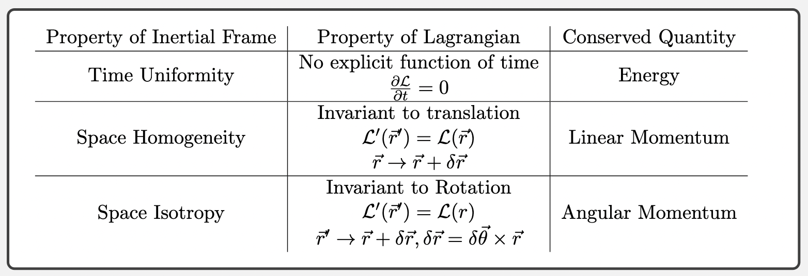
Show for time uniformity we have that energy is conserved.
By the chain rule, we have that:
$$\frac{d\mathcal{L}}{dt}=\sum_i \frac{\partial\mathcal{L}}{\partial q_i}\dot{q}_i+\sum_i \frac{\partial\mathcal{L}}{\partial\dot{q}_i}\ddot{q}_i+\frac{\partial\mathcal{L}}{\partial t}$$By Lagrange's Equation:
$$\frac{d}{dt}\left(\frac{\partial\mathcal{L}}{\partial\dot{q}_i}\right)=\frac{\partial\mathcal{L}}{\partial q_i}$$We use Lagrange's Equation to replace the first term as:
$$\frac{d\mathcal{L}}{dt}=\sum_i \dot{q}_i\frac{d}{dt}\left(\frac{\partial\mathcal{L}}{\partial\dot{q}_i}\right)+\sum_i \frac{\partial\mathcal{L}}{\partial\dot{q}_i}\ddot{q}_i+\frac{\partial\mathcal{L}}{\partial t}$$The first two terms we can combine when we notice that we can apply the product rule in reverse:
\begin{align*} \frac{d\mathcal{L}}{dt} & =\sum_i\frac{d}{dt}\left(\frac{\partial\mathcal{L}}{\partial \dot{q}_i}\dot{q}_i\right)+\frac{\partial\mathcal{L}}{\partial t} \end{align*} $$\sum_i\frac{d}{dt}\left(\frac{\partial\mathcal{L}}{\partial \dot{q}_i}\dot{q}_i\right)-\frac{d\mathcal{L}}{dt}+\frac{\partial\mathcal{L}}{\partial t}=0$$ $$\frac{d}{dt}\left(\sum_i \dot{q}_i\frac{\partial\mathcal{L}}{\partial\dot{q}_i}-\mathcal{L}\right)+\frac{\partial\mathcal{L}}{\partial t}=0$$For time uniformity, there is no explicit dependence on time, or in other terms:
$$\frac{\partial\mathcal{L}}{\partial t}=0$$From above, this implies that:
$$\sum_i \dot{q}_i\frac{\partial\mathcal{L}}{\partial\dot{q}_i}-\mathcal{L}=\text{constant}\equiv E$$Show for space homogeneity we have that linear momentum is conserved.
We shall now see how translational space invariance will provide another conservation law. For this, we are interested in the following transformation for the cartesian coordinates:
$$\vec{r}_{\alpha}\rightarrow \vec{r}_{\alpha}+\vec{\epsilon}$$Where the vector $\vec{\epsilon}$ is small, i.e $\vec{\epsilon}\ll \vec{r}_{\alpha}$
But for $\vec{\epsilon}\neq 0$, and if space is homogeneous, this implies a Lagrangian that must be translationally invariant, and so $\delta\mathcal{L}=0$. Hence:
$$\sum_{\alpha}\frac{\partial\mathcal{L}}{\partial\vec{r}_{\alpha}}=0$$And hence Lagrangian's Equations are:
$$\sum_{\alpha}\frac{d}{dt}\frac{\partial\mathcal{L}}{\partial\dot{\vec{r}}_{\alpha}}-\frac{\partial\mathcal{L}}{\partial\vec{r}_{\alpha}}=0=\frac{d}{dt}\sum_{\alpha}\frac{\partial\mathcal{L}}{\partial\dot{\vec{r}}_{\alpha}}$$And we have seen previously that:
$$\boxed{\vec{p}=\sum_{\alpha}\frac{\partial\mathcal{L}}{\partial\dot{\vec{r}}_{\alpha}}=\sum_{\alpha}\frac{\partial\mathcal{L}}{\partial\vec{v}_{\alpha}}}$$Which is the simply the linear momentum of the system. We have therefore shown that:
$$\vec{p}=\sum_{\alpha}\frac{\partial\mathcal{L}}{\partial\dot{\vec{r}}_{\alpha}}$$is a conserved quantity, or constant motion, i.e:
$$\boxed{\frac{d\vec{p}}{dt}=0}$$Since:
$$\mathcal{L}=\sum_{\alpha}\frac{m_{\alpha}\vec{v}^2_{\alpha}}{2}-V(\vec{r}_1,\vec{r}_2,\dots,\vec{r}_N)$$So we must have the following:
$$\boxed{\vec{p}=\sum_{\alpha}\frac{\partial\mathcal{L}}{\partial\vec{v}_{\alpha}}=m_{\alpha}\vec{v}_{\alpha}}$$And I'll let you figure out the angular momentum one.